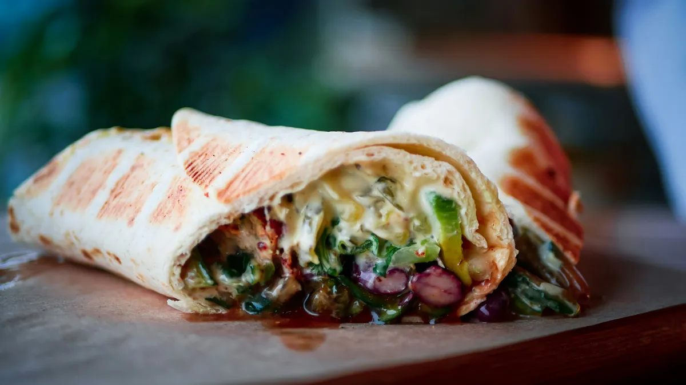

Speisekarte.
Alles, worauf du Hunger hast. Alle Preise auf einen Blick.

Döner & Dürüm
Im Brot, gerollt oder als Lahmacun. Mit Salat und deiner Lieblingssoße.
Döner Pute/Rind
Im Fladenbrot mit frischem Salat und Soße nach Wahl
6,80 €klein7,80 €großDürüm
Gerolltes Fladenbrot mit Drehspießfleisch, Gemüse und Soße
8,50 €Lahmacun mit Fleisch
Türkischer Flammkuchen, gerollt mit Fleisch, Salat und Soße
8,50 €Lahmacun mit Salat
Türkischer Flammkuchen, gerollt mit frischem Salat
7,80 €
Teller & Boxen
Für den großen Hunger oder direkt zum Mitnehmen.
Drehspießteller
Mit Pommes und Salat
12,90 €klein13,90 €großDrehspießbox
To-go-Box mit Beilage und Soße
8,50 €
Vegetarisch
Falafel, Halloumi oder Gemüse. Im Brot, im Dürüm oder auf dem Teller.
Falafel Döner
Im Fladenbrot mit frischem Gemüse und Soße
7,50 €Falafel Dürüm
Im Dürüm-Wrap mit Salat und Soße
8,50 €Falafeltasche
7,50 €Falafelteller
6 Stück Falafel mit Salat
12,90 €Gemüse Döner
Grillgemüse im Fladenbrot mit hausgemachter Soße
7,50 €Gemüse Dürüm
Grillgemüse im Dürüm-Wrap mit Soße nach Wahl
7,80 €Halloumi Döner
Gegrillter Halloumi-Käse im Fladenbrot
7,50 €Halloumi Dürüm
Gegrillter Halloumi-Käse im Dürüm-Wrap
7,80 €
Menüs
Dein Hauptgericht mit Pommes und einem Getränk (0,2 l).
Menü 1 · Döner
Döner + Pommes + Getränk 0,2 l
11,50 €Menü 2 · Dürüm
Dürüm + Pommes + Getränk 0,2 l
12,50 €Menü 3 · Burger
Burger + Pommes + Getränk 0,2 l
9,50 €Menü 4 · Hähnchen
Halbes Hähnchen + Pommes + Getränk 0,2 l
12,00 €
Burger & Hähnchen
Vom Hamburger bis zum ganzen Hähnchen zum Teilen.
Hamburger
5,50 €Cheeseburger
6,50 €Halbes Hähnchen
Frisch gegrillt
7,50 €Ganzes Hähnchen
Zum Teilen oder für den großen Hunger
12,00 €Chicken Nuggets
5,50 €6 Stück10,00 €12 Stück
Beilagen & Salate
Etwas dazu. Oder einfach für sich.
Börek
4,30 €Börek mit Salat
2 Stück Börek, Salat und Soße
7,80 €Gemüsereibekuchen
7,80 €Salatteller
Mit Thunfisch, Hirse, Antipasti und Käse
8,50 €Hummus / Baba Ganoush
Mit Brot
4,50 €Beilagen
Pommes, Reis oder Ofenkartoffel
4,50 €Baklava
Auf Anfrage
Getränke
Kalt dazu. Oder ein türkischer Tee zum Schluss.
Cola / Fanta / Sprite
0,33 l
2,50 €Wasser
0,5 l
2,00 €Ayran
0,25 l
2,00 ۂay
Türkischer Tee
Auf Anfrage
Deine Lieblingssoße.
Alle sechs Soßen sind hausgemacht. Frag uns gern, was zu deinem Gericht passt.
- Knoblauch
- Kräuter
- Scharf
- Cocktail
- Curry
- Curryscharf
Preise, Allergene & Zusatzstoffe
Alle angegebenen Preise in Euro, einschließlich der gesetzlichen Umsatzsteuer. Die Wochenangebote findest du auf der Startseite.
Informationen zu Allergenen und Zusatzstoffen erhältst du vor deiner Bestellung bei uns vor Ort oder telefonisch unter 01590 1254030. Bitte sprich uns besonders bei Allergien und Unverträglichkeiten an.
Die Food-Fotos sind Symbolbilder. Die Zubereitung und Zusammenstellung bei KAYA können davon abweichen.
Hunger? Ruf durch.
Bestellung und Abholzeit besprechen wir direkt am Telefon.